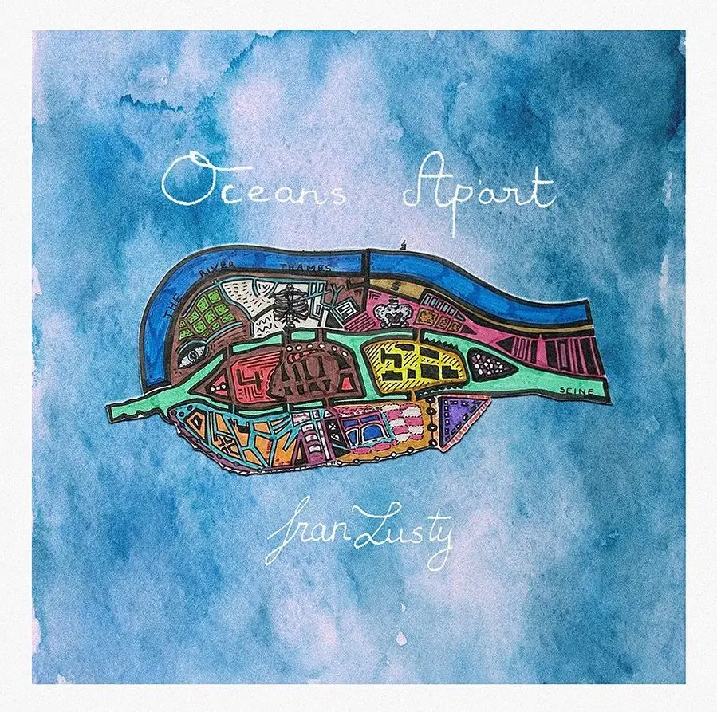

Fran Lusty is an indie-folk singer-songwriter born in Cambridge with
Norwegian roots. She will rock you gently with songs about the ocean.
Her tracks have been described as "dreamful" and "truly
transformative". Fran released her first single, 'Ladybird', in
January 2021. It was mostly for her friends to listen to but quickly
gained traction from a wider audience, including a spin on BBC
Introducing. The singer-songwriter has since moved to London to plunge
into the indie-folk scene. She has discovered the city through its
many intimate venues, gigging weekly and sometimes more. She has
performed at The Water Rats, Colours, Pizza Live Express, Spiritual
Bar, Piano Smithfield, Folklore, and many more. Her band recently sold
out the Troubadour at their first headline show together.

Oceans Apart
28th April